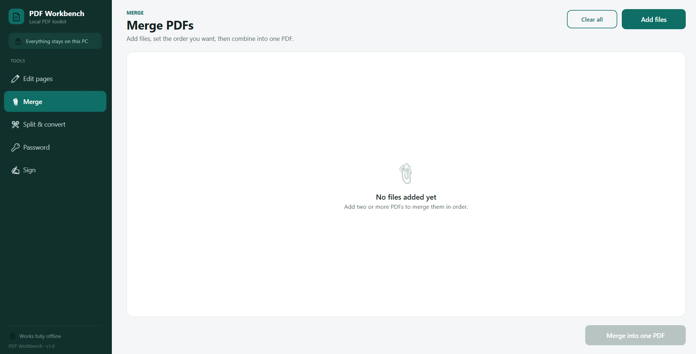
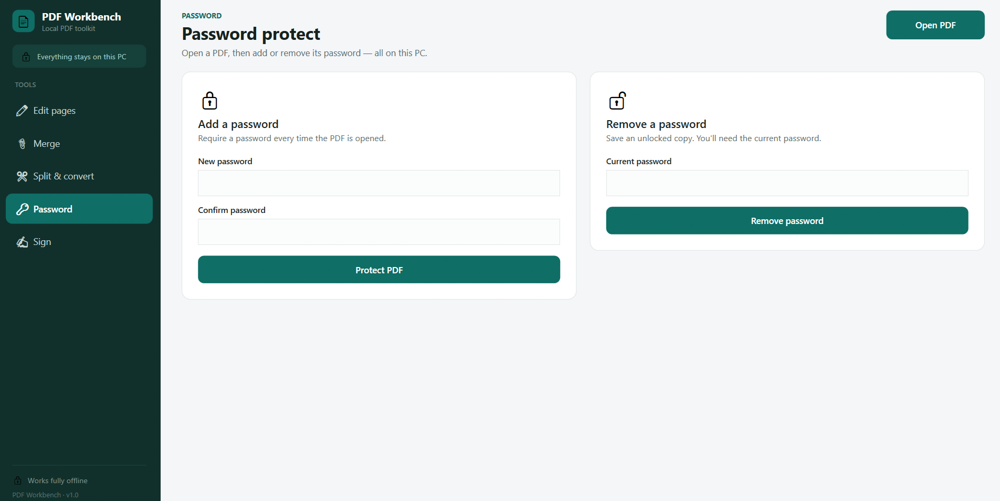
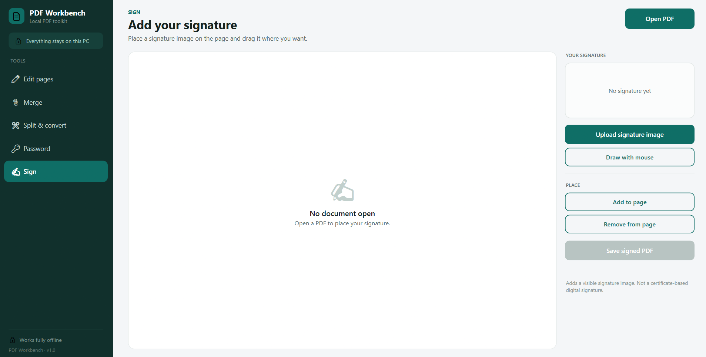

What it does
Most PDF tools are either browser-based (meaning your documents go to someone else's server) or locked behind expensive subscriptions. PDF Workbench is the opposite — it runs entirely on your Windows PC, keeps your files where they belong, and gives you five essential tools in one clean interface.
Edit pages, merge files, split and convert, add passwords, and place signatures — all offline. No cloud uploads, no monthly fees, no accounts. Just your files, on your machine.
Five tools, one workbench
Edit pages
Open one or more PDFs. Each is edited and saved separately. Drag added text to position it. Double-click a text box to edit it — drag to move, drag the corner to resize.
Merge
Add files, set the order you want, then combine into one PDF. Perfect for consolidating reports, invoices, or scanned documents.
Split & convert
Split by page range, split every N pages, or extract specific pages. Convert PDF to images or build a PDF from images. Compress large files for email.
Password
Open a PDF, then add or remove its password — all on this PC. No passwords sent anywhere. Everything stays local.
Sign
Upload a signature image or draw one with your mouse, then place it on any page. Drag to position, drag the corner to resize — save a signed copy.
Fast & native
A lightweight WPF app that opens instantly. Everything runs locally — no waiting for cloud uploads or downloads.
Why offline matters
- Your documents never leave your PC — no cloud uploads, no third-party servers
- Works without an internet connection — ideal for sensitive documents or on-the-go
- No subscription, no monthly fees — pay once and own it
- Faster than any web tool — opens instantly, processes locally
A look inside




Good to know
PDF Workbench is a native WPF app for Windows 10 and 11. All processing is done locally on your machine — no files are uploaded anywhere. It uses Docnet.Core (PDFium) for fast rendering and PdfSharpCore for PDF manipulation. Available on the Microsoft Store as a one-time purchase with no subscription.